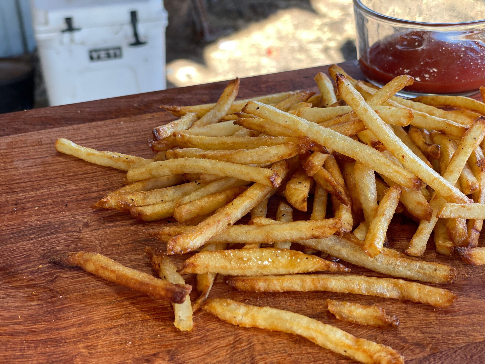

A delicious plate of French Fries
The preferred side with any burger or Chicken Wings
Freshly Cut and Fried potatoes from Iowa
Recipe Instructions
- Peel and Cut potatoes
- Bring oil to cooking temperature while peeling and cutting potatoes
- Add potatoes and deep fry them for a few minutes
- For best flavor deep fry fries a second time
- Finally add salt and enjoy
Return to the Main Page